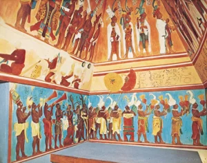

6 Kayıp Uygarlık
İnsanlık tarihi boyunca büyük medeniyetler kurulmuş, gelişmiş ve gerilemiştir. Bunların birçoğu tarihçiler tarafından iyi bir şekilde belgelenmiş ve daha sonraki uygarlıklar yükseliş ve çöküşlerini takip edebilmiştir. Ancak bazıları aniden ortadan kaybolmuş gibi görünüyor. Bazı uygarlıklar ölümlerine neyin sebep olduğuna dair ipuçları bırakırken, diğerlerinin kaybı bir sır olarak kalmaya devam ediyor. İşte bu şaşırtıcı kayıp uygarlıklardan bazıları. 
{kind=link}
Mayalar
Maya imparatorluğu en güçlü olduğu dönemde Yucatán Yarımadası, günümüz Guatemala’sı, Belize ve Meksika’nın bazı bölgelerine yayılmış ve zamanının en baskın medeniyetlerinden biri haline gelmiştir. Mayalar oldukça gelişmişlerdi, olağanüstü mühendislik becerileri sergiliyor ve karmaşık matematik kullanıyorlardı. Uygarlık kendini sürdüremez göründü ve MS 900 civarında dramatik bir düşüş yaşadı. Arkeologlar artık Mayaların, kıtlıkla sonuçlanan ve en büyük şehirlerinden göç etmeye zorlayan iklim değişikliği ile birlikte süregelen savaşın kurbanı olduklarına inanıyor. Kaynakların azalmasıyla sonuçlanan kırsal kesimin yok edilmesi de bir rol oynamış olabilir.
Khmer İmparatorluğu
Dünyanın diğer ucunda, Khmer imparatorluğu günümüz Kamboçya’sına yayılmıştı. Angkor, geniş bir yollar ve kanallar sistemi ve bir milyon kadar olduğu tahmin edilen nüfusuyla uygarlığın en büyük şehirlerinden biriydi. Khmer İmparatorluğu MS 1000 ila 1200 yılları arasında en parlak dönemini yaşamıştır ve uzmanlar uygarlığın yok olmasına ve şehirlerini acımasız ormanın insafına terk etmesine neyin sebep olduğundan emin değildir. Teoriler savaştan çevresel felakete kadar uzanıyor.
İndus Uygarlığı
Harappan uygarlığı olarak da bilinen İndus uygarlığı, Hindistan, Pakistan ve Afganistan’ın bazı bölgelerine yayılan ve beş milyon kadar insanı barındıran, antik tarihin en büyük uygarlıklarından biriydi. Uygarlık, zirvede olduğu dönemde diğer başarılarının yanı sıra dünyanın en etkileyici mimarilerinden bazılarına sahipti. Yaklaşık 3.000 yıl önce bilinmeyen nedenlerle ortadan kayboldu. Bir teori, kuraklık ve kıtlıkla sonuçlanan iklim değişikliğinin kurbanı olduğunu öne sürüyor.
Paskalya Adası
Kıyılarını çevreleyen devasa taş kafalarıyla ünlü Paskalya Adası (Rapa Nui), adaya ilk olarak MS 700’lerde yerleşen, gelişen bir Polinezya uygarlığına ev sahipliği yapmıştır. Adanın sakinleri denizcilik konusunda yetenekliydi ve diğer gelişmiş yeteneklerini de sergilemişlerdi. Bazıları, azalan doğal kaynakların uygarlığın gerilemesine yol açmış olabileceğini düşünüyor. Hastalık ve diğer faktörler de bir rol oynamış olabilir.
Çatalhöyük
Günümüz güney-orta Türkiye’si bir zamanlar dünyanın en eski şehirlerinden birine ev sahipliği yapıyordu: Çatalhöyük. Burası 9.000 ila 7.000 yıl önce gelişen ve sonra aniden yok olan geniş bir uygarlığın parçasıydı. Çatalhöyük’ü benzersiz kılan şey, kovan benzeri yapısıydı – evler yan yana inşa edilmişti ve çatıdaki deliklerden giriliyor, merdivenler ve hava yürüyüş yolları ile erişiliyordu. İnsanlar çoktan yok olmuş olsalar da, geride yaşamlarını ve ritüellerini detaylandıran çok sayıda eşya bırakmışlardır.
Mississippililer
MS 700’lerden Avrupa ile temas ve kolonileşmeye kadar, Amerika’nın güneydoğusu ve orta kıtasının büyük bir kısmı Mississippililer olarak bilinen bir tarım uygarlığına ev sahipliği yapmıştır. En büyük şehirlerinden biri olan Cahokia, günümüz Collinsville, Illinois yakınlarında bulunuyordu. Altı mil kare olduğu tahmin edilen Cahokia’da devasa bir merkezi plaza, büyük toprak piramitler ve yıldızları izlemek için kullanılan Stonehenge’e benzer ahşap yapılar bulunuyordu. Bazıları Cahokia’nın nüfusunun 40.000 olduğunu ve çoğunun ana şehrin dışındaki köylerde yaşadığını tahmin etmektedir. Diğer kayıp uygarlıklarda olduğu gibi, uzmanlar Mississippililerin kademeli olarak yok olmasına neyin yol açtığını kesin olarak bilmemektedir. Popüler teoriler, düşüşün çevresel bozulma ya da kötü sağlık koşullarından kaynaklanan kıtlık ve hastalıkların bir sonucu olduğunu öne sürmektedir.